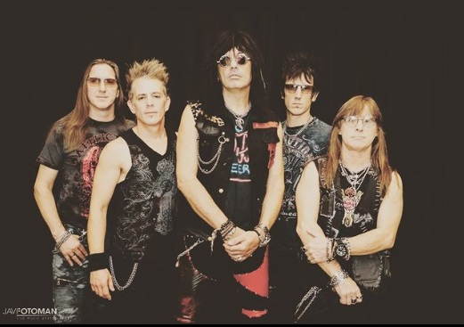

UN POCO DE SU HISTORIA
Desde sus comienzos, la banda ha ido cambiando a sus integrantes, pero Walter Giardino es el único miembro original que permanece hasta hoy.
SU CONFORMACIÓN ACTUAL ESTÁ FORMADA POR:
WALTER GIARDINO (GUITARRA), ADRIÁN BARILARI
(VOZ), FERNANDO SCARCELLA (BATERÍA), DANILO MOSCHEN (TECLADOS) Y PABLO MOTYCZAK (BAJO)
Se trata de una banda de heavy metal, hard rock y metal neoclásico argentino formada en 1985 en la zona del Bajo Flores, barrio ubicado al sur de la ciudad de Buenos Aires. Se la considera como una de las más importantes e influyentes del hard rock y heavy metal en español, aunque durante su carrera también han incorporado pesados riffs con estructuras melódicas y armónicas de la música clásica.
LA BANDA CONSIDERA QUE HACE «ROCK METÁLICO»; PERO CON LOS AÑOS HAN SIDO CLASIFICADOS EN DISTINTOS SUBGÉNEROS
El grupo se lanza al estrellato en la década del '90, destacándose como una de las bandas argentinas más populares de todos los tiempos.
Tres de sus álbumes han sido incluidos entre los mejores 250 del rock iberoamericano. Su carrera parece impulsarse a los más altos niveles cuando en 1990 publican su segundo disco, Magos, Espadas y Rosas, con más de 5 millones de copias vendidas hasta la actualidad. Muchos de sus temas han logrado un alcance de popularidad hasta entonces inimaginables para el rock pesado.
En todos estos años de trayectoria ostentan varios galardones: 12 discos de oro, 10 de platino y 3 doble platino, haciéndolos la banda del género más exitosa del país.